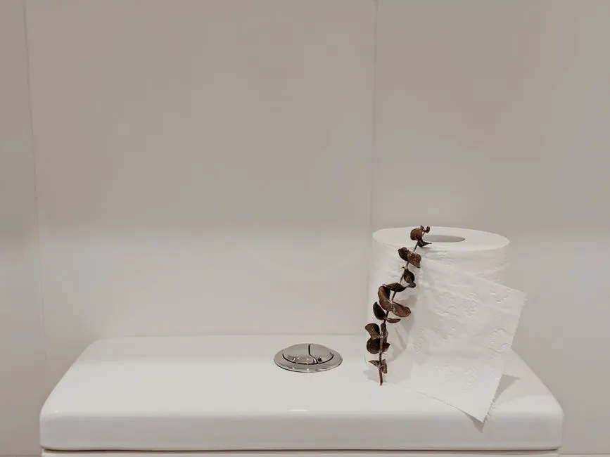

How to Stop a Running Toilet Without Calling a Plumber
A running toilet in Arlington Heights usually means a worn flapper or a misadjusted fill valve. Here is how to diagnose and fix it yourself in under an hour.

A running toilet almost always comes down to one of three parts: a worn flapper, a misadjusted fill valve, or a faulty flush valve seat. You can stop it yourself in about 30 to 45 minutes with a $10 to $25 part and a sponge. This guide walks you through the diagnosis, the two repairs that fix roughly 90% of running toilets, what parts cost in 2026, and the point where you should stop and call a plumber.
We are Five Star Plumber LLC, and we handle Plumbing Arlington Heights IL homeowners call about every week. A running toilet is one of the most common calls we get, and it is also one of the most fixable without us. Here is how to do it right.
Why Is My Toilet Running Constantly in Arlington Heights, Illinois?
A toilet runs constantly in Arlington Heights, Illinois because water is escaping from the tank into the bowl faster than the fill valve can shut off. That constant trickle forces the fill valve to keep cycling, which is why you hear the hiss, the drip, or the phantom refill at 2 a.m.
There are only a few places that water can escape:
- The flapper. A rubber seal at the bottom of the tank. It hardens, warps, or gets a mineral film on it and no longer seats. This is the cause in about 70% of running toilets we see.
- The fill valve. The tall plastic tower that refills the tank. If the float is set too high, water spills into the overflow tube and runs forever.
- The flush valve seat. The plastic or brass rim the flapper presses against. If it is pitted or scaled, even a new flapper will not seal.
- The flush valve seal or tank-to-bowl gasket. Less common, but a slow leak between the tank and bowl will mimic a bad flapper.
- The chain or handle. A chain that is too tight holds the flapper slightly open. A handle that sticks does the same thing.
Arlington Heights water runs hard. The village pulls from Lake Michigan, and while the water is treated, it still carries dissolved minerals that leave scale on rubber and plastic over time. Toilets in the older housing stock near downtown and along the Northwest Highway corridor tend to see flappers fail every 3 to 5 years, sometimes sooner if the toilet sits in a rarely used bathroom where the rubber dries out.
The Five-Minute Diagnosis: Find the Leak Before You Buy Parts
You can identify the exact cause of a running toilet in about five minutes with nothing more than a sponge, a few drops of food coloring, and your ears. Do this before you drive to the hardware store so you buy the right part the first time.
Step 1: Listen and look
Take the tank lid off and set it somewhere safe. Flush the toilet and watch what happens. If water continues to trickle into the bowl after the flush finishes, the flapper or flush valve seat is the problem. If water is spilling into the tall open tube in the middle of the tank (the overflow tube), the fill valve is set too high or has failed.
Step 2: The food coloring test
Drop a few drops of food coloring into the tank water. Do not flush. Wait 10 to 15 minutes. If color appears in the bowl, water is leaking past the flapper. That confirms a flapper or flush valve seat issue. If the bowl stays clear, the problem is on the fill side.
Step 3: Check the chain and handle
Look at the chain connecting the handle arm to the flapper. It should have about half an inch of slack. If it is tight, the flapper never fully closes. If the handle sticks or feels gritty, it can hold the flapper open just enough to run.
Step 4: Feel the flapper
Run your fingers along the rubber flapper. A healthy flapper is soft and pliable. A failing one feels stiff, slick, or gritty with mineral deposits. If it is hard to the touch, replace it regardless of what the food coloring test showed.
If the diagnosis points to something beyond a flapper or fill valve adjustment, we can take a look. Our team handles toilet repair and installation Arlington Heights IL for everything from a stubborn flush valve to a full toilet replacement.
How to Replace a Toilet Flapper in Arlington Heights IL
Replacing a toilet flapper in Arlington Heights IL is the single most common fix for a running toilet, and it takes about 15 minutes. You need a replacement flapper that matches your toilet brand, a sponge, and a towel.
- Shut off the water. Turn the oval valve behind the toilet clockwise until it stops. Flush the toilet to drain most of the tank. Sponge out the remaining inch or two of water.
- Disconnect the old flapper. Unclip the chain from the handle arm. Slide the flapper off the two pegs on the overflow tube, or unhook it from the flush valve depending on the model.
- Inspect the flush valve seat. Run your finger around the rim the flapper sits on. If it feels rough or has visible scale, clean it with a mild descaling solution or a piece of fine emery cloth. A pitted seat will destroy a new flapper within months.
- Install the new flapper. Seat it on the pegs or hooks, reconnect the chain with about half an inch of slack, and make sure the flapper sits flat and centered.
- Turn the water back on and test. Let the tank fill, then watch and listen for 5 minutes. No trickle, no hiss. Flush twice to confirm the flapper reseats cleanly.
Flappers cost $6 to $15 at any Arlington Heights hardware store. Buy the brand-specific one if you can. Universal flappers work, but they fit loosely on some older toilets and can fail early. If you would rather not deal with it, we handle Plumbing repair Arlington Heights IL and can swap a flapper the same day.
Fixing a Stuck or Misadjusted Fill Valve
A fill valve that never shuts off is the second most common cause of a toilet running constantly in Arlington Heights, Illinois. The fix is usually an adjustment, not a replacement.
Adjust the float height
If your fill valve has a float on an arm, bend the arm down slightly so the float sits lower. If it has a vertical float cup on the shaft, pinch the clip and slide the cup down about half an inch. The goal is for the water to stop filling about an inch below the top of the overflow tube. If water is spilling into the overflow, the float is set too high.
Clean or replace the fill valve
If adjusting the float does not stop the running, the diaphragm inside the fill valve has probably failed or is clogged with sediment. Shut off the water, drain the tank, and either clean the valve cap and diaphragm or replace the whole fill valve. A new fill valve costs $10 to $20 and takes about 20 minutes to install.
One thing worth knowing: if your fill valve is more than 10 years old and you are already replacing the flapper, replace the fill valve at the same time. The parts are cheap and you will not have to open the tank again next month.
What It Costs to Fix a Running Toilet in 2026
Typical 2026 pricing in the Arlington Heights area puts a DIY running toilet fix at $10 to $25 in parts. A professional repair runs $125 to $250 depending on what needs replacing and whether the toilet needs to be pulled.
- Flapper only: $6 to $15 in parts, 15 minutes of your time.
- Fill valve: $10 to $20 in parts, 20 to 30 minutes.
- Flapper and fill valve together: $20 to $35 in parts, 45 minutes.
- Flush valve seat replacement: $15 to $30 in parts, but this often requires pulling the tank. Plan on an hour or more.
- Professional repair: $125 to $250 for a standard running toilet call, parts included.
That last number is worth putting in perspective. A running toilet wastes 200 gallons of water a day, sometimes more. At Arlington Heights water and sewer rates, that is roughly $30 to $60 added to your bimonthly bill. A $10 flapper pays for itself in a week.
Common Mistakes That Make a Running Toilet Worse
The most common mistake we see after a DIY running toilet repair is a flapper installed on a dirty or pitted flush valve seat. The new rubber never seals, and the homeowner assumes the flapper was defective.
Other mistakes worth avoiding:
- Over-tightening the chain. A tight chain holds the flapper open. Leave half an inch of slack.
- Bending the float arm too far. Small adjustments. A quarter inch at a time.
- Using a universal flapper on a Glacier Bay or older American Standard toilet. It will fit, but it may not seal. Match the brand.
- Forcing the shutoff valve. Old angle stops behind the toilet seize up. If yours will not turn by hand, stop. Forcing it can snap the pipe inside the wall and turn a $15 fix into a leak detection and repair Arlington Heights IL call.
- Ignoring a rocking toilet. If the toilet moves when you lean on it, the wax ring is failing. Fix that before it becomes a floor repair.
- Skipping the tank-to-bowl bolts. If you pull the tank to replace the flush valve seat, replace the tank-to-bowl gasket and bolts at the same time. They are $5 and they prevent a slow leak between tank and bowl.
If you are already dealing with a slow drain on top of the running toilet, that is a separate issue. Our team handles drain cleaning Arlington Heights IL for kitchen, bathroom, and main line clogs, and we can look at both problems on the same visit.
When to Call a Professional
Call a professional when the flapper and fill valve are both new and the toilet still runs, when the shutoff valve behind the toilet will not close, or when the toilet rocks or leaks at the base. Those point to a flush valve seat problem, a seized angle stop, or a failed wax ring. None of those are DIY jobs.
We also get calls from homeowners in the older neighborhoods near Arlington Heights Road and the downtown Metra station where toilets are original to the house. A 1960s toilet with a brass flush valve can usually be rebuilt, but sometimes the smarter move is a new toilet. We will tell you which one makes sense for your situation and quote it upfront.
Five Star Plumber LLC handles running toilet repair and full toilet replacement across Arlington Heights and the surrounding suburbs. We stock common flappers and fill valves on the truck, so most running toilet calls are a one-visit fix.
Frequently Asked Questions
How do I stop my toilet from running in Arlington Heights IL?
Shut off the water behind the toilet, drain the tank, and check the flapper first. A worn flapper causes about 70% of running toilets. Replace it with a brand-matched flapper for $6 to $15, reconnect the chain with half an inch of slack, and test. If it still runs, adjust or replace the fill valve.
What causes a toilet to run constantly in Arlington Heights, Illinois?
Hard water is the main culprit. Lake Michigan water leaves mineral scale on rubber flappers and plastic valve seats, so they stop sealing within 3 to 5 years. A flapper that no longer seats, a float set too high, or a pitted flush valve seat are the three most common causes we find.
Can I fix a running toilet myself in Arlington Heights IL?
Yes, in most cases. A flapper or fill valve replacement takes 15 to 45 minutes and costs $10 to $35 in parts. You can do it with a sponge, a towel, and a screwdriver. If the shutoff valve will not close or the toilet rocks at the base, stop and call a plumber.
When should I call a plumber for a running toilet in Arlington Heights?
Call when new parts do not fix it, when the angle stop behind the toilet is seized, or when water appears at the base of the toilet. Those signal a flush valve seat, a pipe issue, or a failed wax ring. A professional running toilet repair runs $125 to $250 in 2026.
How much water does a running toilet waste?
A running toilet wastes 200 gallons a day on average, and severe cases hit 500 gallons or more. In Arlington Heights that adds roughly $30 to $60 to your bimonthly water and sewer bill. Fixing it with a $10 flapper usually pays for itself within a week.
Get Help with Plumbing in Arlington Heights
If you have replaced the flapper, adjusted the fill valve, and the toilet is still running, we can take it from here. Five Star Plumber LLC serves Arlington Heights and the surrounding northwest suburbs with same-day running toilet repair and upfront pricing.
Call us at (224) 643-9856 and we will get your toilet quiet again.